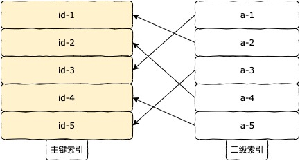

在业务中实现分页功能就离不了MySQL的limit语句，而随着数据表中数据量的增加，则不可避免会导致查询时偏移量过大。
我们知道随着偏移量的增大，limit语句的耗时会增加，接下来我们就探讨下如何去更好的处理limit的耗时问题。
一、实验
1、MySQL版本：
1 | mysql> select version(); |
2、实验表结构：
1 | mysql> desc t213; |
其中，id为自增主键，字段a为普通索引
3、实验数据量近200万：
1 | mysql> select count(*) from t213; |
4、开始测试：
当偏移量为100万时：
1 | mysql> select * from t213 where a=4 limit 1000000,10; |
我们知道以上的方法效率并不高，一般我们在数据量大的数据表中，不直接limit，而是通过连接去先查询id，再查询字段：
1 | mysql> select c1.id, c1.a, c1.b from t213 c1 right join(select id from t213 where a=4 limit 1000000,10)c2 on c1.id=c2.id; |
这两种方法的效率相差巨大，那么为什么会如此呢？MySQL是如何执行相差巨大的两条语句的呢？
二、分析
根据高性能MySQL中关于limit的说明：
limit语句在偏移量巨大时，如select * from t213 where a=4 limit 1000000,10;。
对效率的影响主要在于MySQL会查询1,000,010条数据，并取最后10条，抛弃掉前面的1,000,000条。
也就是说，MySQL耗时耗力找到的数据，绝大部分都得废弃！
MySQL查找索引a的二级索引树，然后根据二级索引树上的主键值回表到聚簇索引树上进行扫描数据，为了limit而重复大量无用的IO操作

上图为扫描索引树
关于MySQL为什么limit时会遍历这么多数据，而不是遍历所需的几条，我们不去深究其设计原理，我们只分析下：select c1.id, c1.a, c1.b from t213 c1 right join(select id from t213 where a=4 limit 1000000,10)c2 on c1.id=c2.id;
语句为何会比select * from t213 where a=4 limit 1000000,10;
快那么多。
我们知道，MySQL中查询的数据会放在数据页中以便快速获取，
而系统表information_schema.innodb_buffer_page保存着InnoDB缓冲池中每个页面的信息。
我们在执行sql后查询innodb_buffer_page表中数据页的个数来判断下两个sql语句的不同之处。
** t213表中有近200万数据 **
首先，重启MySQL服务，以便innodb_buffer_page表中t213测试表的数据页为空，然后执行不优化的sql：
1 | mysql> select index_name,count(*) from information_schema.innodb_buffer_page |
可以看到select * from test.t213 where a=4 limit 1000000,10;语句使用到901个二级索引a的索引数据页，使用到2156个聚簇索引数据页。
然后我们再次重启MySQL服务，确保innodb_buffer_page是空的，并执行优化的sql：
1 | mysql> select index_name,count(*) from information_schema.innodb_buffer_page |
以上可以看到优化后的sql使用了聚簇索引树的3个数据页。
通过两个对比，我们可以发现，在select * from test.t213 c1 right join(select id from test.t213 where a=4 limit 1000000,10)c2 on c1.id=c2.id;
语句中，首先执行关联语句 select id from test.t213 where a=4 limit 1000000,10
使用到覆盖索引的概念，扫描二级索引树并获取到主键id值。
之后执行外部sql时，由于id已经找到，直接回表聚簇索引树查找响应id数据即可。
而执行未优化的select * from test.t213 where a=4 limit 1000000,10;语句时，
每一次在二级索引获取到的id值都需要回表，执行到最后才判断哪些数据是满足条件的，这样导致费力不讨好，效率很慢。
三、总结
高性能MySQL中提供有以下几种limit分页的优化方式：
1、join关联方式：select * from test.t213 c1 right join(select id from test.t213 where a=4 limit 1000000,10)c2 on c1.id=c2.id;
2、主键递增的表，每次分页记录上次的最大id值，下次分页查询通过判断id > last_id_num来执行：select * from test.t213 where id>1000000 and a=4 limit 10;
3、主键递增的表，通过between id值来执行分页：select * from test.t213 where a=4 and id between 1000001 and 1000010;
一般来说2，3两种方法虽然效率更高，但是局限性稍大。
实际项目中，针对分页我们要注意，随着数据量的增加，如果limit使用不当，分页效率会越来越慢，导致接口响应时间增加，用户友好度下降。
编写sql时使用合适的limit方式，会减少很多不必要的问题。